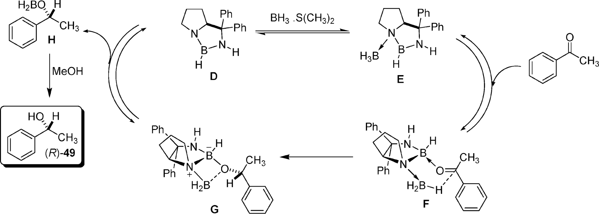
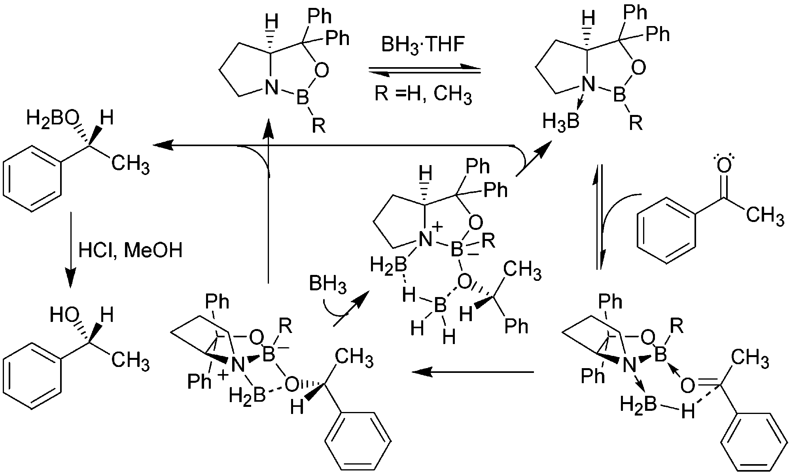
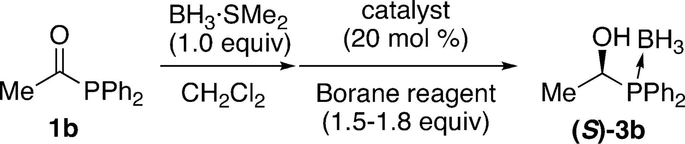
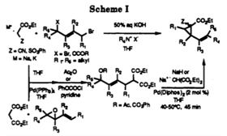
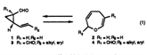
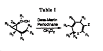

References
Reference 32: Corey, E. J.; Shibata, S.; Bakshi, R. K. J. Org. Chem. 1988, 53, 2861-2863.
Relevant citations:
- Juaristi, E. J. Org. Chem. 2012, 77, 4861-4884. 
- Alagona, G.; Ghio, C.; Persico, M.; Tomasi, S. J. Am. Chem. Soc. 2003, 125, 10027-10039. 
- Hayashi, M.; Ishitobi, H.; Matsuura, Y.; Matsuura, T.; Watanabe, Y. Org. Lett. 2014, 16, 5830-5833. 
The (S)-CBS catalyst D is activated by BH3 S(CH3)2 to yield the reactive intermediate E. The hydride on E attacks the carbonyl, selectively forming the (R) stereoisomer at the carbonyl carbon. The oxygen is stabilized by the N-BH2 and then steals the BH2 group from the catalyst. Upon addition of methanol, the (R) alcohol is formed.
The mechanism here is similar to the one above, and it uses another (S)-CBS catalyst to generate the same (R) alcohol product. However, the CBS catalyst has an oxygen instead of a nitrogen (like the catalyst used in the conversion of molecule 8 to 10). It can be seen from the two schemes above that the (S)-CBS catalysts form (R) stereoisomeric products and that the catalyst takes advantage of the boron's low electronegativity for the reaction to occur. This mechanism also shows how the catalyst can regenerate from the intermediate.
Note: the catalyst is (S)-Me-CBS-oxazaborolidine and the Borane reagent is additional BH3·SMe2.
The table in this paper showed that this reaction at room temperature occurred with high yield and high enantiomeric excess, which increased as the reaction time increased. At low temperatures, the reaction was not stereoselective at all, as the enantiomeric excess was 0%.
Reference 33: Boeckman, R. K., Jr.; Flann, C. J.; Poss, K. M. J. Am. Chem. Soc. 1985, 107 (14), 4359.
Relevant citations:
- Rotsides, C. Z.; Woerpel, K. A. Organometallics 2016, 35 (18), 3132-3138.
- Chapuis, C.; Skuy, D.; de Saint Laumer, JY.; Brauchli, R. Chem. Biodivers. 2014, 11 (10), 1470-1516.
- Jiang, XX.; Wang, R. Chem. Rev. 2013, 113 (7), 5515-5546.
Step 25 to 26 shows an enone undergoing a retro-Claisen rearrangement to provide a hydroquinone derivative.
"As suggested in the introduction, either an unobserved (E/Z)-isomerization of the dienophiles 5 or an alternative competing mechanism can explain these observations. Davies and Dai, having obtained mainly the endo-homo-Diels-Alder adducts, suggested that these are unstable under their reaction conditions (ca. 0.02-1.00 mol-equiv. Me2AlCl, CH2Cl2, -40° to -20°), and prone to a retro-Claisen reaction, leading to hetero-Diels-Alder cycloadducts. This kind of domino reactions were first observed at the beginning of the 1980s, by Oppolzer et al. [18a], Ismail and Hoffmann [18b], and Boeckman et al. [18c]"
Reference 35: Boeckman R. K. Jr.; Reeder, M. R. J. J. Org. Chem. 1997, 62, 6456-6457.
Relevant citations:
- Devambatia, R. K. V.; Velagaleti, R.; Varravarapu, N.; Fleming, F. F. Tetrahedron 2012, 68, 2925-2942.
- Levin, S.; Nani, R. R.; Seisman, S. E. J. Am. Chem. Soc. 2011, 133, 774-776.
- Gaían-Fernández, R.; Clemente-Tejeda, D.; del Río-Nieto, E.; Bermejo, F. A. Tetrahedron 2010, 66, 8247-8253.
The reference to the original article by using the SN2 displacement with a highly stereoselective nucleophile to form pure vinyl cyclobutanes.
Original article chemistry
Original article chemistry:
The reference to the original article is used in reference to how the Claisen rearrangements explored in the original article are reversible and, in the experiment in this second article, is used to describe how the equilibrium did not favor 16 and that it was not present in the 1H NMR data, but they hypothesized that 16 was still present and used a kinetic trapping method in order to continue the experiment.
Original article chemistry:
The original article was referenced in relation to the diacylation that occurs from 6 and causes 7 to also be a product of this step. This third article attempted to reduce the formation of 7 by using different solvents.
Reference 36: Boeckman R. K. Jr.; Zhang, J.; Reeder, M. R. Org. Lett. 2002, 4, 3891-3894.
Relevant citations:
- Boeckman, R. K. Jr.; Genung, N. E.; Chen, K.; Ryder, T. R. Org. Lett. 2010, 12, 1628-1631.
- Weatherhead, G.; Cortez, G.; Schrock, R.; Hoveyda, A. Proc. Natl. Acad. Sci. U.S.A., 2004, 101, 5805-5809.
- Sawada, Y.; Sasaki, M.; Takeda. K. Org. Lett. 2004, 6, 2277-2279.
This article uses Retro-Claisen rearrangement to form oxacycles.
Condition A led to a highly efficient C-C bond formation with molecule 28 as the major product.
A new method of forming 8-membered carbocycles via an oxidative cleavage of the two-atom internal tether of molecule 3, which is constructed by [3+4] annulation.